A comprehensive study of Mixed Integer Programming with JuMP on Julia (Part 3)
I am solving a problem with an exponential number of constraints with the Branch-and-Cut framework
Yes, it’s possible.
Even though it’s very counter-intuitive, we can handle a linear program with an exponential number of constraints provided that we have a practical (even approached) way of separating these constraints.
This story is a continuation of this one and this one, where I explained how we could use linear programming in order to solve large combinatorial problems, and now we will go to the level above and see how we could use stronger formulations that may contain an exponential number of constraints.
To do so we will see the meaning of a “separation procedure” and how we could use it to solve the first sort of non-compact linear formulation by using “Lazy Constraints Callbacks” of the framework JuMP in a Branch-and-cut framework.
We will also see how we could use the Branch-and-cut Framework to strengthen a compact formulation with “Lazy Constraints Callbacks.”
Yet another variant of the TSP (Traveling Salesman Problem)
The problem I chose to present to illustrate how to use a branch-and-cut formulation is the Traveling Salesman Problem; I made this choice for two reasons: the first one is that it’s a widely known problem among people who are interested in combinatorics problem solving, and the second is that it’s, in my opinion, the problem that the branch-and-cut formulations have most helped to solve on a large scale.
More precisely, I chose the Capacitated Vehicle Routing Problem (CVRP) problem because it’s an interesting variant of the TSP for which we can visualise better the concrete cases of application.
Description of the problem
Imagine that you have many clients, each with its demand positioned on a map, a depot and a fleet of K trucks; how would you organise the delivery to minimise the overall cost of the delivery?
First, we’ll define a type representing a client in Julia; the client must have its position and demand; this could be done using the struct keyword.
struct Clientpositiondemandend;client1 = Client([0,10], 25)
To generate a random instance, we’ll say that the coordinates are in a square 100x100, and the demand is an integer between 15 and 30; the following function gives us a random client :
function random\_client(pos\_range, demande\_range)position = rand(pos\_range, (1, 2))demand = rand(demande\_range, 1)client = Client(position, demand[1])return clientend;client1 = random\_client(1:100, 15:30);
Now that we have a representation of the clients, we can define a representation of the problem, which contains in addition to the clients the coordinates of the depot, the number of trucks m and their capacity Q.
struct CVRP\_ProblemclientsdepotmQend;
And thus, a function that generates a random instance.
function random\_instance(n\_clients, depot, m, Q)clients = Dict([(i,random\_client(0:100, 10:30)) for i in 1:n\_clients])problem = CVRP\_Problem(clients, depot, m , Q)return problemend;
And now, to visualise the problem, let’s set up a function to display the problem.
function display\_problem(problem)x\_pos = [c.position[1] for c in values(problem.clients)]y\_pos = [c.position[2] for c in values(problem.clients)]scatter(x\_pos, y\_pos, shape = :circle, markersize = 6, label= "Client")scatter!([problem.depot[1]], [problem.depot[2]], shape = :square, markersize = 8, label= "Depot")end;
This function gives us for a random problem the following figure :
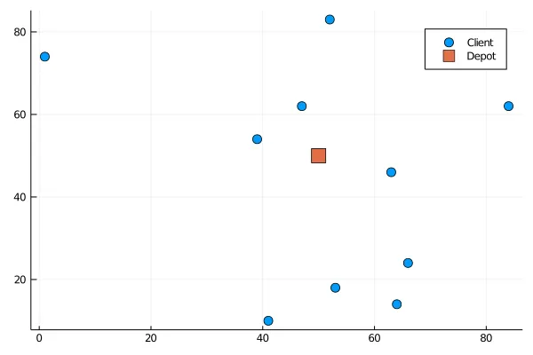
Formalisation of the problem
Since the objective is to minimise the overall distance travelled by all trucks and not the number of trucks, a solution could be represented by the arcs taken in the tour.
Remember that each client must be visited by precisely one truck, so we suppose that the most considerable demand is less than the capacity of the trucks.
So the solution is the indication for each arc e=(x,y) of whether it is taken or not, so the decision variables will be binary variables xₑ for each e.
Now we’ll define some proper notations :
First, we define a notation for the sum of decision variables, given a set of edges E, we define :
After that, we define the “neighbour” operator δ
So, δ⁺ is the arcs that go from a vertex and δ⁻ the arcs that go to a vertex; here is an illustration to clarify the concept.
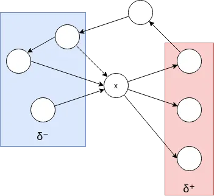
So to build vehicle routes, we should constraint the solution with the following constraint that ensures that each client is visited one time (one entry and one exit) :
Since each client’s demand is below the capacity of a truck, if a client is visited by one truck, it’s sufficient to deliver the quantity he demands.
And to constraint the number of trucks, we should also constraint the depot (vertex 0) with the following constraint so that there are not more exits than the number of trucks m.
The objective is to reduce the route’s total cost, representing the overall distance covered by the tour.
The complete program so far is given by the following code.
cvrp = Model(GLPK.Optimizer)x=@variable(cvrp,x[0:length(problem.clients),0:length(problem.clients)],Bin)@constraint(cvrp, sum(get\_out(x, 0)) <= problem.m)@constraint(cvrp, sum(get\_in(x, 0)) <= problem.m)for i in 1:length(problem.clients)@constraint(cvrp, sum(get\_in(x, i)) == 1)@constraint(cvrp, sum(get\_out(x, i)) == 1)end;obj\_coef = []for i in 0:length(problem.clients)for j in 0:length(problem.clients)append!(obj\_coef, [get\_cost(problem, i, j) \* x[i,j] ] )end;end;@objective(cvrp,Min,sum(obj\_coef))optimize!(cvrp)termination\_status(cvrp)objective\_value(cvrp)
But is this formulation sufficient to solve the vehicle routing problem? — of course, no otherwise, this article would be too short.
Subtour Elimination
Subtour problem
If we run the precedent program, we should obtain the following result :
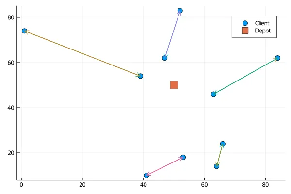
Is this a bug? — no, it’s not; the following solution is a solution that fits the program perfectly. The problem is in the program itself since he allows the presence of the sub tours.
This illustration shows another example of subtour, and we can see that each vertex of the subtour satisfies its constraints.
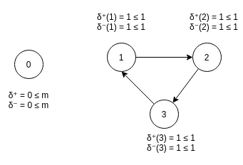
Another problem that could be found in the solutions that satisfy the constraints of the program is that the following solution is accepted :
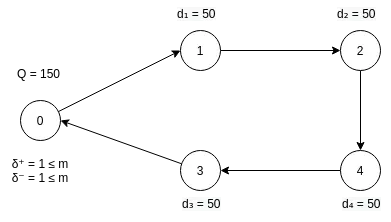
And it should not because the tour is not realisable since the sum of the demands in the vertexes through which the tour passes is more than the capacity of a truck.
Miller-Tucker-Zemlin inequalities
The Miller-Tucker-Zemlin are inequalities that permit to write a compact program for any TSP variant.
The idea is that we create new variables w for each vertex that represents the quantity in the truck when arriving in the vertex.
We then should add a constraint that expresses the following :
If the arc (a,b) is taken in a tour, then the difference between the quantity before a and the quantity before b should be greater than the demand in a.
We have w ≤ Q naturally.
And this could be represented by the following inequalities :
Because if xᵢⱼ = 1 the constraint becomes:
which is what we needed, and if xᵢⱼ = 0 the constraint gives us:
which is trivial and thus don’t constraint the solution.
After adding the MTZ constraints, the code becomes:
cvrp = Model(GLPK.Optimizer)x=@variable(cvrp,x[0:length(problem.clients),0:length(problem.clients)],Bin)@constraint(cvrp, sum(get\_out(x, 0)) <= problem.m)@constraint(cvrp, sum(get\_in(x, 0)) <= problem.m)for i in 1:length(problem.clients)@constraint(cvrp, sum(get\_in(x, i)) == 1)@constraint(cvrp, sum(get\_out(x, i)) == 1)end;w = @variable(cvrp,w[0:length(problem.clients)])for (i,vi) in problem.clientsfor j in 0:length(problem.clients)if(i == j)continueend;c = @constraint(cvrp, w[i] - w[j] >= vi.demand - (problem.Q +vi.demand)\*(1-x[i,j]))end;end;obj\_coef = []for i in 0:length(problem.clients)for j in 0:length(problem.clients)append!(obj\_coef, [get\_cost(problem, i, j) \* x[i,j] ] )end;end;@objective(cvrp,Min,sum(obj\_coef))
And for the precedent instance, it gives us:
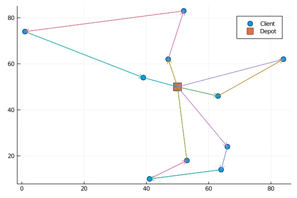
Resource Capacity Constraints
The resource capacity constraints are a family of constraints to replace and/or strengthen the MTZ formulation.
These constraints say that if we have a set of clients S with a sum of demands D = ∑dᵢ (i ∈ S), then we need at least W(S) trucks to serve them :
These constraints could replace the MTZ constraints because they make the solution involving sub tours not valid.
The problem with these inequalities is that they should stand for every subset of clients, and thus enumerating them would result in an exponential enumeration which is irrelevant.
The solution is to use them in a cutting plane approach.
Branch-and-Cut Framework
We will successively see how to replace the MTZ inequalities using “user cuts” and then reinforce the obtained formulation with “lazy cuts”. But, first, we need to define a separation algorithm.
Separation theorem
A separation algorithm is an algorithm that returns for a given solution a violated constraint, if any, or that proves that there is not any violated constraint.
Suppose the separation algorithm runs in a polynomial time. In that case, even if the constraints are in an exponential number, we still could optimise in a polynomial number of calls to the solver.
Separation problem
Here the separation problem is to find given a solution a set of clients such that
if any, and by noting
this is equivalent to solving the following optimisation problem :
And if the min is 0, then it means that there is not any violated inequality.
Breaking sub tours with a separation algorithm
One attractive property that we could exploit to get rid of MTZ inequalities while eliminating the sub tours is that if a solution is integral (see the precedent chapter to remember the difference between an integral and a fractional solution), then verifying the resource capacity constraints on the connected components is sufficient to check the validity of a solution.
So we should update the workflow of the branch-and-bound by adding violated inequalities to get rid of the integrated solutions that contain sub tours :
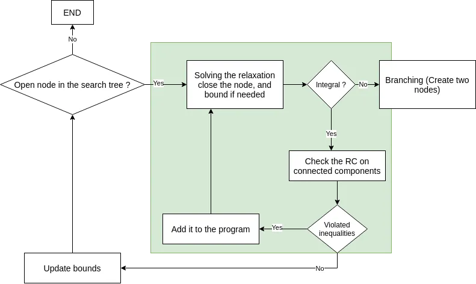
Adding inequalities is also called “cutting” solutions, and this approach is an example of a branch-and-bound-and-cut approach or, more concisely, a branch-and-cut approach.
The implemented separating function should be put in a “user cut” callback to be run on each solution until it doesn't return any violated constraint.
Now let’s see how to implement this in Julia,
First of all, let’s see the needed operators we need to compute the function that the separation problem is minimising.
The delta operator should be extended to a set of vertices like that.
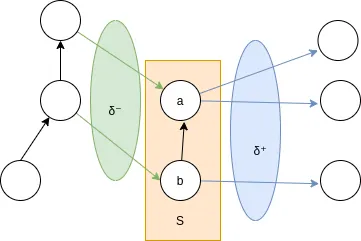
δ for a group of vertices S is the set of edges with exactly one endpoint in S, and this could be implemented as follows :
function delta(problem, S, x)L = []for i in Sfor j in 0:length(problem.clients)if !(j in S)i\_min = min(i,j)i\_max = max(i,j)if !(x[i\_min,i\_max] in L)append!(L, [x[i\_min,i\_max]]);end;end;end;end;return Lend;
Then, we need a function that computes the total demand of a set of clients.
function demand\_s(problem, S)d = 0;for c in Sd = d + problem.clients[c].demand;end;return d;end;
And this allows us to define the function to minimise.
function W(problem, x, cs, cb\_data)L = delta\_cb(problem, cs, x, cb\_data)return L - 2\*ceil(demand\_s(problem, cs)/problem.Q)end;
Finally, to verify if W is negative on the connected components that form a subtour, we first need to detect the connected components in the graph produced by a solution.
To do so, we’ll use the library “LightGraph.jl”, and the first step is to write a function that creates a graph object from a set of x variables.
function build\_simple\_graph(problem, x)g = SimpleGraph(length(problem.clients));for i in 0:nv(g)for j in i+1:nv(g)if(value(x[i,j]) == 1)add\_edge!(g, i, j)end;end;end;return g;end;
Then, we run without the MTZ constraints and visualise the solution.
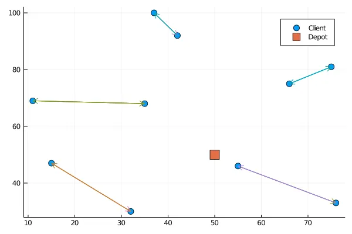
And now we compute the connected components and see if the function W is negative on them, which will traduce a violated resource constraint.
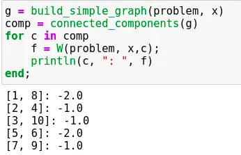
And we see that for the integral solution returned by the formulation without the MTZ constraints, the sub tours give us a negative value of the function W.
Another interesting remark is that this formulation has a better convergence speed so that now we could solve more significant instances as in the following :
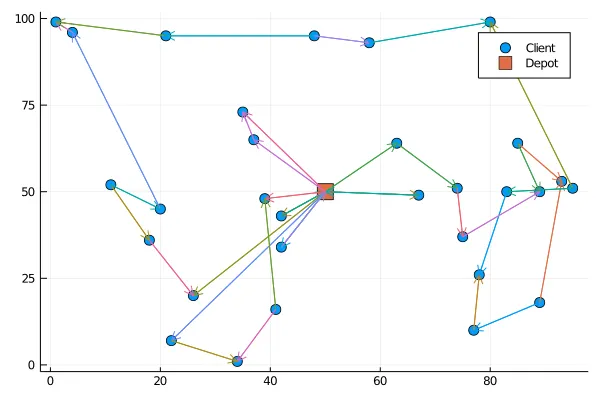
Please ignore the direction of arrows, as in this article; I switched to a modelisation that uses undirected graphs to have fewer variables.
This is, by the way, the code that created the linear program :
cvrp = Model(GLPK.Optimizer)n = length(problem.clients)x = @variable(cvrp,x[i= 0:n, j = i+1:n ],Int)for i in 0:nfor j in i+1:nif( i == 0)c = @constraint(cvrp, 0 <= x[i,j] <= 2)elsec= @constraint(cvrp, 0 <= x[i,j] <= 1)end;end;end;c= @constraint(cvrp, sum(delta(problem, [0], x)) == 2\*problem.m )for i in 1:nδ = delta(problem, [i], x)if(length(δ) == 0)continueend;c = @constraint(cvrp, sum(δ) == 2 )end;obj\_coef = []for i in 0:nfor j in i+1:nappend!(obj\_coef, [get\_cost(problem, i, j) \* x[i,j] ] )end;end;@objective(cvrp,Min,sum(obj\_coef))
And this is the callback I used to check for each integral solution if its connected components satisfy the resource constraints :
function ressource\_constraints(cb\_data)status = callback\_node\_status(cb\_data, cvrp)if(status == MOI.CALLBACK\_NODE\_STATUS\_INTEGER)g = build\_simple\_graph\_cb(problem, x, cb\_data)comp = connected\_components(g)for c in compf = W(problem, x,c, cb\_data);if(f <0 )con = @build\_constraint(sum(delta(problem, c, x)) >=2\*ceil(demand\_s(problem, c)/problem.Q))MOI.submit(cvrp, MOI.LazyConstraint(cb\_data), con)end;end;end;end;MOI.set(cvrp, MOI.LazyConstraintCallback(), ressource\_constraints);
And it gives us the following outputs:
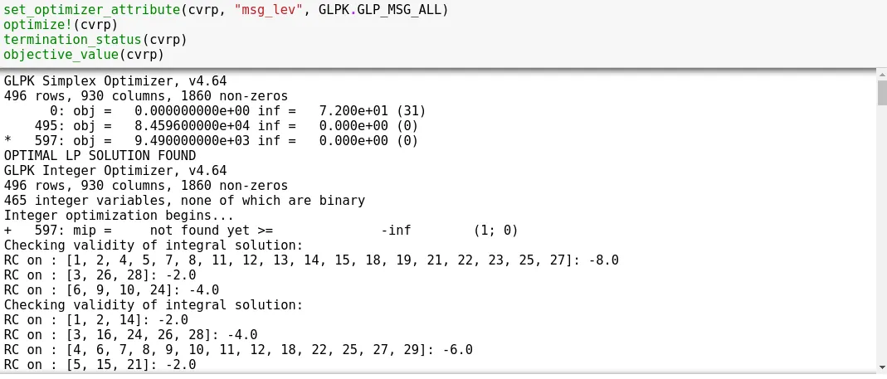
So we could see the incremental enrichment of the program with cuts that avoid the sub tours in the solution.
Bonus: Branch-and-cut for reinforcement
Finally, we’ll explain another way to use the branch-and-cut framework.
The separation algorithm will now be used to reinforce the formulation. By that, we mean that the separation algorithm is no longer a part of the constraint’s definition.
Still, now, it’s called during the optimisation process to generate new cuts that will tighten the formulation.
To do that, we have to define the separation process as a “Lazy Cut”, and the advantage of using branch-and-cut as a lazy constraint is that we could use meta-heuristics to search for the potential cuts to make because even if we don’t find them all, it won't result in an infeasible solution.
For example, in the precedent code, we could add that we seek a set of clients that violate the resource constraints even for a fractional solution. By doing so, we create additional cuts that will reinforce the convergence.
For more information, you can read this article where a tabu search is used to separate the resource inequalities for the CVRP problem.
Conclusion
Branch-and-cut approaches are an exciting way to consider combinatorial problems because they require considering valid tight inequalities and how to separate them efficiently.